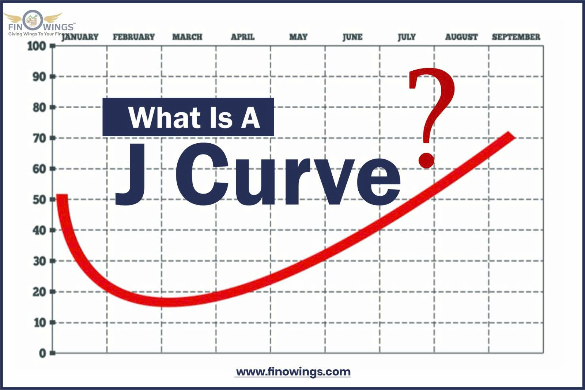

The J-Curve Effect: A Comprehensive Analysis of Currency Devaluation and Trade Balance Dynamics
For governments wrestling with chronic trade deficits, the strategic decision to devalue the domestic currency is often seen as a powerful tool to restore balance. The theoretical expectation is straightforward: cheaper exports and costlier imports should immediately improve the trade balance. Yet, the empirical evidence consistently shows an initial counterintuitive deterioration before the expected improvement materializes—a phenomenon known as the J-Curve Effect. A sophisticated understanding of this dynamic is crucial for international investors and policymakers to manage expectations and ensure policy success.
1. The Mechanism of Price and Volume Lags
Currency devaluation changes the Terms of Trade, but its ultimate impact on the trade balance (the difference between export revenue and import expenditure) is delayed due to market rigidities.
- The Price Effect (Immediate Valuation Shock): Immediately upon devaluation, the domestic currency value of existing import contracts (often invoiced in hard currencies like USD) instantly rises. Since trade volumes are fixed in the short term by prior contracts, the country must pay a higher domestic currency equivalent for the same quantity of goods. Simultaneously, export revenues, also fixed by contract, remain unchanged in foreign currency terms. The deficit, measured in the domestic currency, immediately widens. This negative valuation shock is the initial "downward hook" of the J-Curve.
- The Volume Effect (The Response Lag): This represents the time required for buyers and sellers to adjust their behavior to the new price signals. Consumers need time to find and switch to domestic substitutes; foreign buyers need time to recognize the sustained price change, update their supply contracts, and ramp up new orders. This adjustment lag is the reason for the delay in trade balance improvement.
2. The Detailed Phases of the J-Curve Effect
The J-Curve delineates the precise path of the trade balance over several quarters following a significant currency change.
Phase 1: Initial Contraction and Deficit Widening (0–6 Months)
In this phase, all trade volumes are assumed to be inelastic (not responsive to price changes) due to existing contracts and search costs. The negative Price Effect is the sole driver:
- The trade balance deteriorates simply because the same volume of expensive imports now costs more in terms of the devalued domestic currency.
- This phase requires policy patience. Short-term trade data will appear to indicate policy failure, often leading to market skepticism and further pressure on the currency if the Central Bank fails to manage public expectations.
Phase 2: The Turning Point and Stabilization (6–12 Months)
This critical inflection point occurs when trade volumes begin their first adjustments, slowly offsetting the negative price effect.
-
Marginal Substitution: Price-sensitive domestic consumers start the initial substitution away from expensive imports. Foreign buyers begin pilot orders for the now-cheaper exports.
- The Marshall-Lerner Condition: The turning point signals that the combined absolute value of the price elasticities of demand for imports and exports is rapidly approaching one. Once the sum of these elasticities exceeds one (∣ϵM∣+∣ϵX∣>1), the volume effect begins to outweigh the price effect, and the trade balance starts to improve.
Phase 3: Sustained Expansion (12–24+ Months)
In the long run, the volume adjustments achieve full elasticity and become the dominant force, leading to the expected, sustained improvement in the trade balance.
-
Export-Led Growth: Export volumes surge as manufacturers secure long-term foreign contracts. Export-oriented industries experience rapid revenue growth.
- Import Suppression: Domestic industries capture market share from former importers, further reducing the overall import bill.
- Structural Investment: Capital investment is directed toward expanding export capacity, solidifying the long-term trade advantage created by the devaluation.
3. Strategic Failure Conditions: When the J-Curve Fails to Rise
The J-Curve is not guaranteed. Several factors can prevent the trade balance from ever completing the "upward sweep," leading to sustained currency weakness and trade deficits.
- High Import Content in Exports: If a country’s exports rely heavily on imported components (e.g., assembly manufacturing), the devaluation simultaneously makes the final product more competitive abroad and increases the domestic-currency cost of its imported inputs. This neutralizes the export price advantage.
- Lack of Product Differentiation: If a country’s exports are generic commodities (low elasticity), foreign buyers may not significantly increase volume even with lower prices. Conversely, if a country relies on unique technology imports (inelastic demand), domestic consumers have few alternatives and must continue purchasing the now-costlier imports.
- Inflationary Spiral: The most severe failure occurs when the devaluation immediately feeds into high domestic inflation (e.g., through increased import prices being passed on to consumers). If domestic wages and prices rise quickly, the competitive edge gained by the devaluation is rapidly eroded, effectively returning the terms of trade to their original, pre-devaluation state, but with higher domestic prices—a phenomenon known as pass-through inflation.
4. Investment Foresight: Sectoral Impact Analysis
For strategic investors, the J-Curve dictates distinct sector rotations and risk management requirements:
- Initial Phase (0-6M): Focus on defensive sectors and avoid those reliant on foreign supply chains. Companies holding large foreign debt will report massive domestic-currency losses on their balance sheets.
- Recovery Phase (6-12M): Target industries with high price elasticity of demand—typically tourism, large-volume manufacturing, and basic materials—as these will lead the export volume recovery.
- Long-Term Phase (12M+): Assess companies' structural capacity. Invest in firms that successfully expanded capacity during the adjustment phase, signaling a sustainable competitive advantage in the new, favorable exchange rate environment.
Resource: Hai Dang - Bachelor in Vin University